Calm
Default. Closed mouth, steady eyes. Headers, About, serious pages.

Smile
Friendly. Welcome states, success messages, social avatars.

Wave
Hello. Greetings, onboarding, newsletter sign-off.
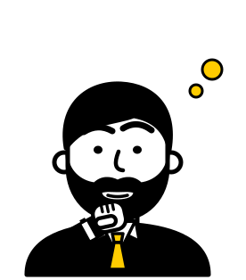
Thinking
Working it out. Research, guides, "how it works" sections.
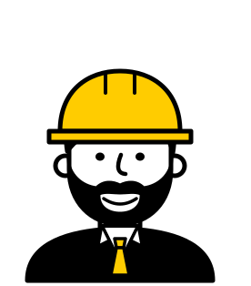
Builder
Hard hat on. Engineering wiki, project controls, construction content.
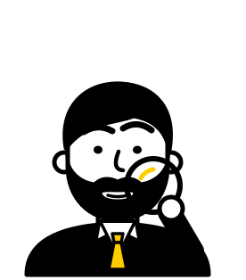
Searching
Looking closely. Search, empty results, research pages.

Building
At the keyboard. Developer wiki, build guides, behind-the-scenes posts.
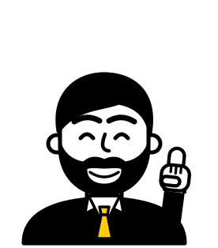
Thumbs up
Approved. Success, confirmations, "good to go".

Idea
Lightbulb moment. Tips, announcements, new resources.
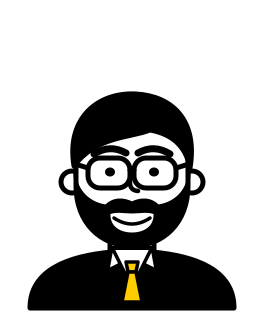
Glasses
Glasses on (they appear in the reference photo). Reading, detail work.
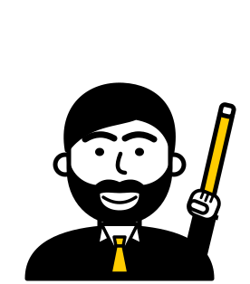
Sketching
Pencil up. Design wiki, drafts, "first idea" posts.
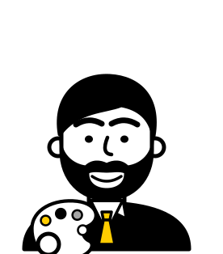
Colour
Choosing colours. Design wiki, brand and colour posts.
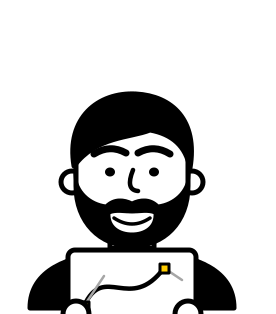
Drawing
Vector curve on a tablet. Design wiki, UI and logo posts.
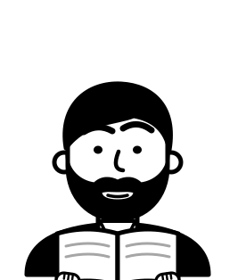
Reading
Deep in a paper. Research page, literature notes.
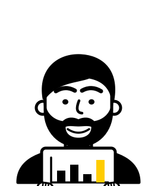
Data
Showing results. Charts, project-controls and findings posts.
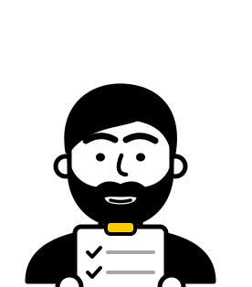
Notes
Checklist in hand. Methods, schedules, "how I check it" posts.
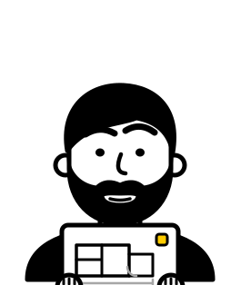
Blueprint
Reading the drawings. Civil and construction wiki, design reviews.
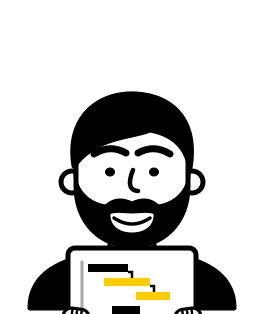
Schedule
Planning the programme. Project-controls wiki, baselines, critical path.
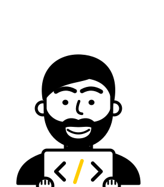
Coding
Writing code. Developer wiki, tooling and automation guides.

Launch
Shipped. Releases, new tools, "it is live" announcements.